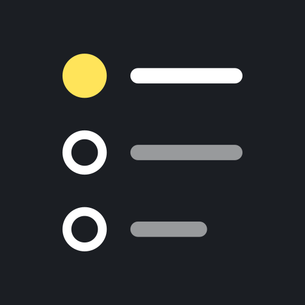

Aday MemurSon güncelleme: 16 Kasım 2026
Aday Memur, resmî kaynaklarda yayımlanan kamu personel alım ilanlarını derleyip özetleyen bağımsız bir uygulamadır. Uygulama hiçbir kamu kurumunu temsil etmez, başvuru almaz ve işe alım süreçlerine aracılık etmez.
İlan özetleri (kadro sayısı, puan türü, taban puan, tarih, öğrenim ve bölüm şartları) ilan metinlerinden otomatik olarak çıkarılır ve hata içerebilir. “Bana Uygun” sonuçları bilgilendirme amaçlıdır. Başvuru yapmadan önce şartları kurumun resmî ilan metninden doğrulamak kullanıcının sorumluluğundadır. Eksik veya hatalı bilgiden doğan zararlardan geliştirici sorumlu tutulamaz.
Uygulamanın ücretsiz sürümünde reklam gösterilebilir. Pro aboneler reklam görmez.
Koşullar güncellenebilir; güncel metin bu sayfada yayımlanır. Bu koşullara Türkiye Cumhuriyeti hukuku uygulanır.
İletişim: selcukyuss@gmail.com